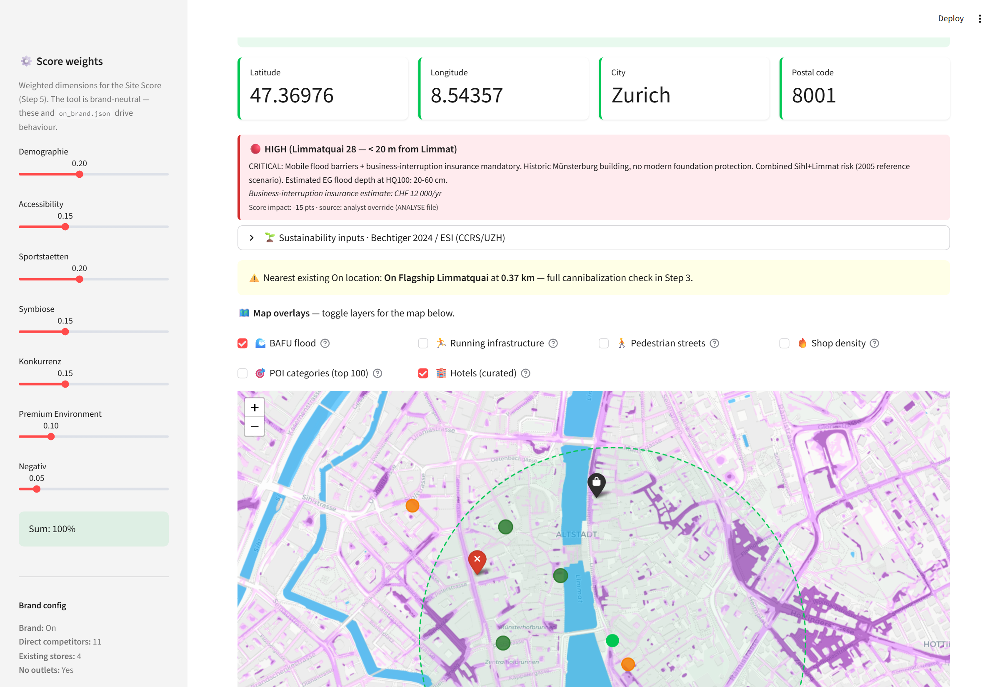
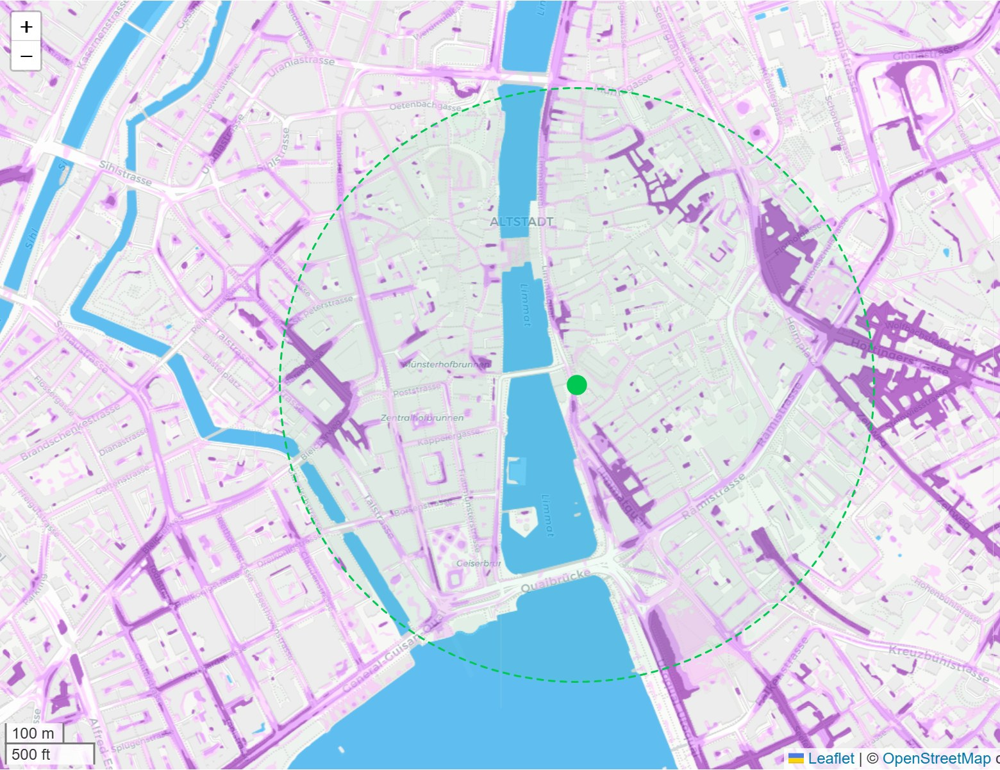
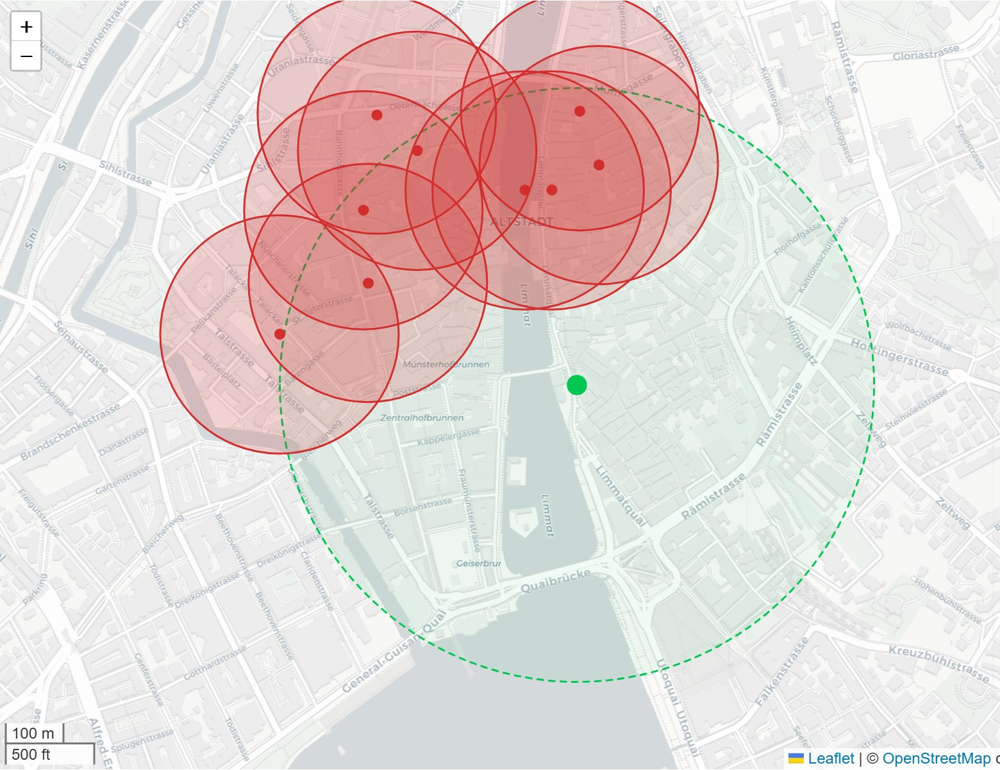
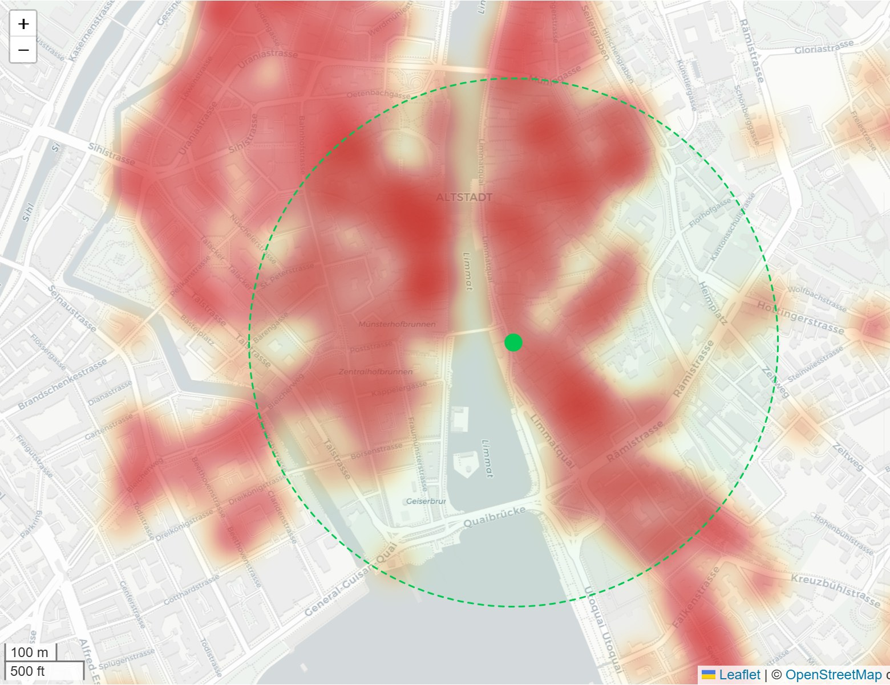

A tool to support retail real-estate location search — site scoring, flood-risk, footfall, and leasehold pro-forma — built on open data (OpenStreetMap · Swiss BFS · BAFU). Reference brand: On.
A seven-step funnel that mirrors a retail analyst's daily workflow, from a broker lead to a deal memo — every score fully inspectable (glass-box).
Geocoded candidate with the BAFU surface-runoff hazard overlay and curated premium-hotel layer. Niederdorfstrasse 21 sits inside the Sihl/Limmat HQ100 flood perimeter.

Every dimension normalised 0-100 before weighting, with flood penalty and Bechtiger-2024 / ESI sustainability adjustment applied transparently.
Each analytical overlay is an independent, toggleable map layer. Three of twelve, captured at Niederdorfstrasse 21.



The live app analyses any address — this static page only shows one.
git clone https://github.com/TStrathaus/retail-real-estate-site-intelligence.git
cd retail-real-estate-site-intelligence
python -m venv .venv && source .venv/bin/activate # Windows: .venv\Scripts\activate
pip install -r requirements.txt
cp .env.example .env # set NOMINATIM_USER_AGENT
streamlit run app.py